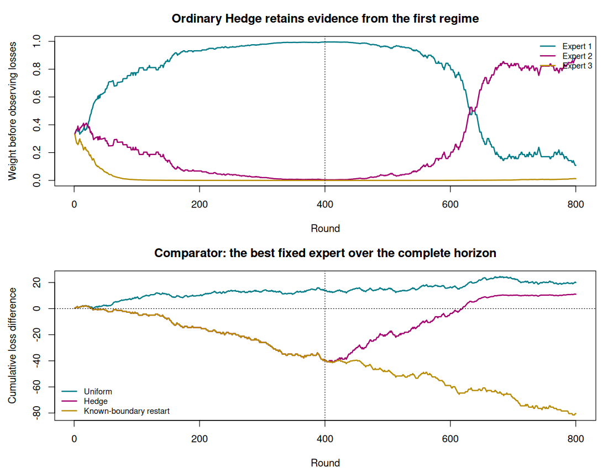

8. Online learning and regret#
Question. How should a learner act when each decision must precede the next observation?
Batch learning chooses a rule after observing a training sample. Online learning specifies a sequence: act, observe feedback, update, and act again. The feedback might contain a full loss function or only a partial observation. This chapter begins with full information, where the mathematical distinction between prediction and adaptation is easiest to see.
The central target is cumulative loss relative to a declared comparator. Small regret is a precise guarantee, but its meaning depends on what that comparator is allowed to do.
8.1 · Write the protocol before the algorithm#
At round \(t\), the learner chooses \(w_t\in\mathcal W\) using information available before the new loss. A loss function \(\ell_t\) is revealed, the learner incurs \(\ell_t(w_t)\), and it updates its decision. In the full-information setting it can use the observed loss function or an appropriate gradient. In prediction with experts, it sees every expert’s loss after acting.
For a fixed decision set, define
The comparator is the best single fixed decision in hindsight. This is not necessarily the best decision at each time. Regret can be negative, because the learner changes its decision while the comparator cannot. The useful goal is an upper bound growing more slowly than \(T\).
The sequence need not be iid for the deterministic convex regret argument below. For randomized partial-feedback methods, specify what the environment can observe before choosing outcomes; an adversary that reacts to the current random action can change the guarantee.
8.2 · Learn from experts with Hedge#
Suppose \(K\) experts supply advice and their losses satisfy \(L_{tk}\in[0,1]\). Hedge maintains weights
The learner’s mixture loss is \(\sum_kp_{tk}L_{tk}\). It is the conditional expected loss when an expert is sampled using \(p_t\). With a convex loss of a numerical prediction, combining predictions can sometimes have loss no larger than the mixture loss, by Jensen’s inequality; that is an additional property of the prediction setup.
Full-information feedback is essential to this update: all expert losses are observed after the round. The exponential-weights analysis yields a bound of the form \(\log K/\eta+\eta T/8\) for bounded losses and the mixture-loss convention. Balancing the terms gives order \(\sqrt{T\log K}\) regret.
Example 8.1 · Good adaptation can still lose on the next round
Setup. Two experts incur losses \((0,1)\) on the first round and \((1,0)\) on the second. Use uniform initial weights and \(\eta=\log3\).
Work it through. Round-one mixture loss is \(1/2\). The updated weights are \((3/4,1/4)\), so round-two mixture loss is \(3/4\). Total loss is \(1.25\); either fixed expert loses exactly 1, so regret is \(0.25\).
What this shows. The weight update uses past evidence and cannot know that the next outcome reverses. A cumulative guarantee does not assert that every update improves the next prediction.
8.3 · Derive projected online gradient descent#
Let \(\mathcal W\) be closed and convex with Euclidean diameter at most \(D\). Suppose each \(\ell_t\) is convex and a subgradient \(g_t\) at \(w_t\) has norm at most \(G\). Projected OGD is
For any fixed comparator \(u\in\mathcal W\), convexity gives \(\ell_t(w_t)-\ell_t(u)\le g_t^{\mathsf T}(w_t-u)\). The projection inequality gives
Rearranging and summing cancels the intermediate squared distances. Consequently,
For a known horizon, \(\eta=D/(G\sqrt T)\) yields \(DG\sqrt T\). The proof makes the assumptions visible: bounded domain, bounded subgradients, convex losses, and updates that occur after the current decision. Smoothness is not required for this bound.
Example 8.2 · A guarantee with an explicit comparator
Setup. Decisions lie in \([-1,1]\) and losses are linear, \(\ell_t(w)=g_tw\) with \(|g_t|\le1\). Take \(T=100\).
Work it through. Here \(D=2\), \(G=1\), and the constant step size is \(0.2\). Equation (8.2) gives regret at most 20. The best fixed decision has total loss \(-|\sum_tg_t|\), while a separate best decision at every time would have loss \(-\sum_t|g_t|\).
What this shows. The guarantee concerns the first comparator. Replacing it with the second changes the problem; the original proof does not establish small regret against an unrestricted sequence of decisions.
8.4 · Regret is not automatically statistical risk#
Under iid observations \(Z_t\), let \(\ell_t(w)=\ell(w,Z_t)\) and \(R(w)=E\ell(w,Z)\). If \(w_t\) depends only on preceding observations, it is independent of the current iid \(Z_t\). For convex loss, the average iterate \(\bar w_T=T^{-1}\sum_tw_t\) then satisfies an online-to-batch inequality of the form
where \(w^*\) minimizes population risk and the expectations exist. Independence and convexity justify this conversion. An arbitrary dependent or drifting sequence does not permit the same argument merely because an online algorithm was used.
Likewise, a fixed-comparator regret bound does not establish calibrated confidence intervals, validity under arbitrary optional stopping, or successful tracking of unrestricted change. Dynamic or adaptive regret changes the comparator class and generally needs additional structure or a different guarantee.
8.5 · Execute the full-information experiment#
The lab supplies all experts’ losses after each decision. One expert has the smallest expected loss in the first half, and another in the second. It compares uniform mixing, ordinary Hedge, and a policy told the exact change boundary. The last is an oracle illustration, explicitly using information unavailable to a learner that must detect changes.
The table reports loss relative to both a fixed expert and a two-segment comparator. The OGD example separately checks the deterministic inequality on a realized sequence of linear losses. These examples distinguish a full-information calculation from the bandit experiment in the next chapter.
Code
# Chapter 8: full-information Hedge and projected online gradient descent.
set.seed(2026102108)
options(width = 100)
T <- 800L
K <- 3L
losses <- matrix(0, T, K)
for (t in seq_len(T)) {
error_probability <- if (t <= T / 2) c(.15, .3, .45) else c(.45, .3, .15)
losses[t, ] <- rbinom(K, 1, error_probability)
}
hedge <- function(L, reset_at = integer()) {
horizon <- nrow(L)
eta <- sqrt(8 * log(ncol(L)) / horizon)
score <- rep(0, ncol(L))
incurred <- numeric(horizon)
weights <- matrix(NA_real_, horizon, ncol(L))
for (t in seq_len(horizon)) {
if (t %in% reset_at) score[] <- 0
z <- -eta * score
w <- exp(z - max(z))
w <- w / sum(w)
weights[t, ] <- w
incurred[t] <- sum(w * L[t, ])
score <- score + L[t, ] # Update only after the round's loss is incurred.
}
list(loss = incurred, weights = weights)
}
ordinary <- hedge(losses)
restart <- hedge(losses, reset_at = T / 2 + 1L)
best_fixed <- min(colSums(losses))
best_two_segments <- min(colSums(losses[1:(T / 2), ])) +
min(colSums(losses[(T / 2 + 1):T, ]))
summarize <- function(v) c(total_loss = sum(v),
fixed_regret = sum(v) - best_fixed,
two_segment_regret = sum(v) - best_two_segments)
cat("Full-information losses; mixture loss is expected loss under sampled experts:\n")
print(round(rbind(uniform = summarize(rowMeans(losses)),
hedge = summarize(ordinary$loss),
known_boundary_restart = summarize(restart$loss)), 3))
cat("\nThe restart policy is given the true change boundary; it is an oracle illustration.\n")
cat("A negative fixed-comparator regret is possible because the learner can change weights.\n")
cat("Hedge weights before rounds 1, 400, 401 and 800:\n")
print(round(ordinary$weights[c(1, 400, 401, 800), ], 4))
# Linear convex losses ell_t(w)=g_t*w on [-1,1]; diameter D=2 and gradient bound G=1.
horizon <- 400L
g <- sample(c(-1, 1), horizon, replace = TRUE, prob = c(.55, .45))
D <- 2
G <- 1
eta <- D / (G * sqrt(horizon))
w <- 0
ogd_loss <- numeric(horizon)
for (t in seq_len(horizon)) {
ogd_loss[t] <- g[t] * w
w <- max(-1, min(1, w - eta * g[t]))
}
best_constant_loss <- -abs(sum(g))
regret <- sum(ogd_loss) - best_constant_loss
bound <- D^2 / (2 * eta) + eta * G^2 * horizon / 2
cat("\nProjected OGD, fixed-comparator regret and the deterministic upper bound:\n")
print(c(regret = regret, bound = bound, step_size = eta))
stopifnot(regret <= bound + 1e-10)
figure_dir <- Sys.getenv("COURSE_FIGURE_DIR", "")
if (nzchar(figure_dir)) {
dir.create(figure_dir, recursive = TRUE, showWarnings = FALSE)
png(file.path(figure_dir, "08-online-learning.png"),
width = 1100, height = 850, res = 110)
par(mfrow = c(2, 1), mar = c(4, 4.5, 3, 1))
colours <- c("#007A87", "#A2006E", "#B88A00")
matplot(seq_len(T), ordinary$weights, type = "l", lty = 1, lwd = 2,
col = colours, xlab = "Round", ylab = "Weight before observing losses",
main = "Ordinary Hedge retains evidence from the first regime")
abline(v = T / 2, lty = 3)
legend("topright", legend = paste("Expert", 1:K), col = colours,
lty = 1, lwd = 2, bty = "n", cex = .8)
comparator_loss <- losses[, which.min(colSums(losses))]
loss_differences <- cbind(rowMeans(losses), ordinary$loss, restart$loss) - comparator_loss
cumulative_difference <- apply(loss_differences, 2, cumsum)
matplot(seq_len(T), cumulative_difference, type = "l", lty = 1, lwd = 2,
col = colours, xlab = "Round", ylab = "Cumulative loss difference",
main = "Comparator: the best fixed expert over the complete horizon")
abline(h = 0, v = T / 2, lty = 3)
legend("bottomleft", legend = c("Uniform", "Hedge", "Known-boundary restart"),
col = colours, lty = 1, lwd = 2, bty = "n", cex = .8)
invisible(dev.off())
}
Output
Full-information losses; mixture loss is expected loss under sampled experts:
total_loss fixed_regret two_segment_regret
uniform 240.000 20.000 123.000
hedge 231.052 11.052 114.052
known_boundary_restart 139.536 -80.464 22.536
The restart policy is given the true change boundary; it is an oracle illustration.
A negative fixed-comparator regret is possible because the learner can change weights.
Hedge weights before rounds 1, 400, 401 and 800:
[,1] [,2] [,3]
[1,] 0.3333 0.3333 0.3333
[2,] 0.9953 0.0047 0.0000
[3,] 0.9953 0.0047 0.0000
[4,] 0.1081 0.8799 0.0120
Projected OGD, fixed-comparator regret and the deterministic upper bound:
regret bound step_size
23.2 40.0 0.1


8.6 · Exercises#
Reproduce Example 8.1 with \(\eta=0\). Explain why the result does not show that learning is useless.
Complete the projection-and-telescoping proof. What breaks if the gradient has no finite bound on the decision set?
Run the experiment without changing the experts’ loss probabilities halfway through. Report both comparators and explain when they coincide or differ in a finite sample.
A researcher sorts a static dataset into an arbitrary order and calls it a time series. What online-learning questions can still be studied, and which claims about temporal distribution shift are unsupported?
Worked solutions
1. With zero learning rate, the weights stay uniform and total loss is 1, matching the best fixed expert in this particular two-round sequence. Other sequences reward adaptation. A two-round counterexample to monotone improvement is not a universal comparison of algorithms.
2. Bound the first squared distance by \(D^2\), discard the nonnegative final squared distance, and bound \(\sum_t\|g_t\|^2\) by \(TG^2\). Without a gradient bound, that sum can be large or require a different data-dependent analysis.
3. Even under stationary expected losses, random outcomes can make the best realized expert differ across halves. The two-segment comparator is at least as flexible and has loss no larger than the best fixed expert. Report this distinction rather than interpreting every difference as evidence of population drift.
4. One can study sequential prediction under the chosen presentation protocol, computation, and regret relative to declared comparators. The imposed order does not supply evidence that the original population evolved over real time. A temporal claim requires a defensible timestamp or longitudinal data-generating interpretation.
Reading and transition#
Read Sections 1.1–1.3 and 3.1 of Hazan, Introduction to Online Convex Optimization, second edition. The text also develops alternative comparator notions. Next, remove full feedback: choosing an action determines which reward is observed.